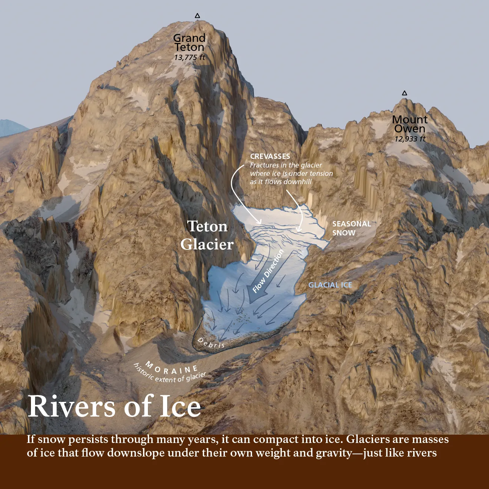
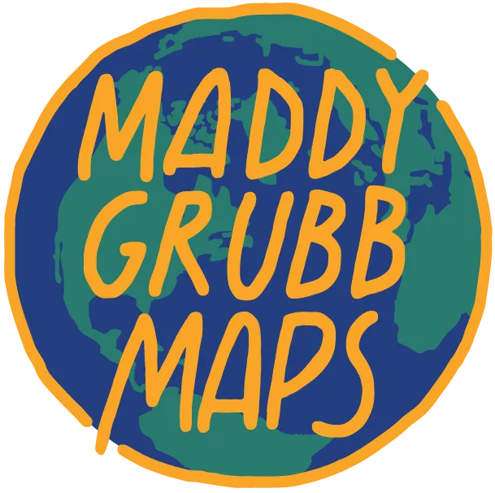
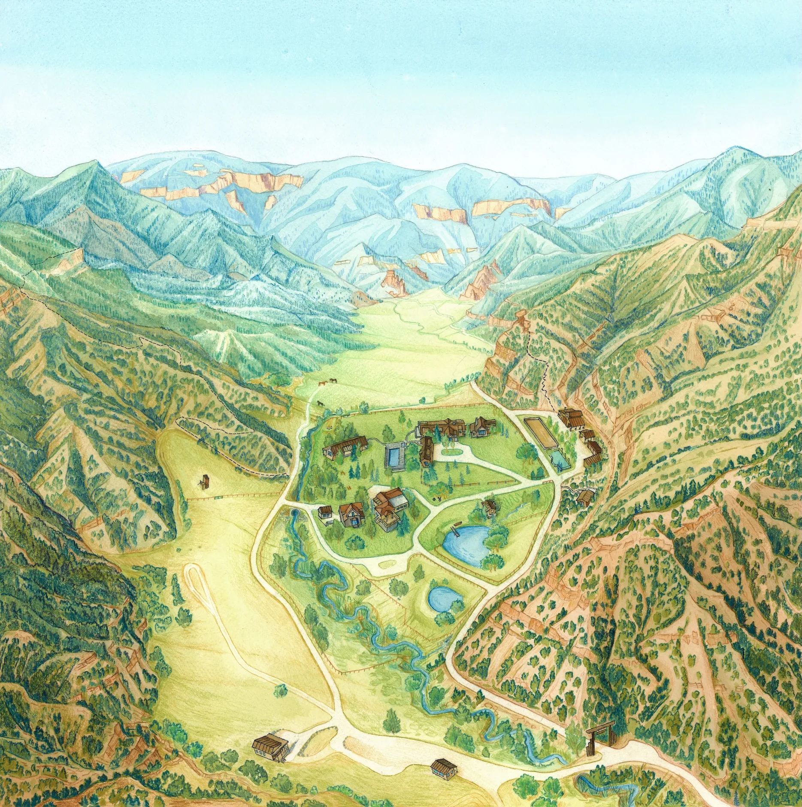
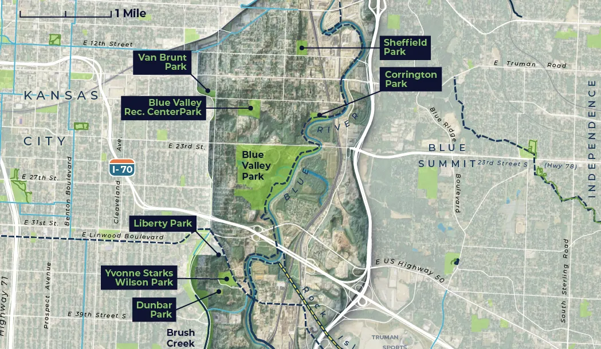
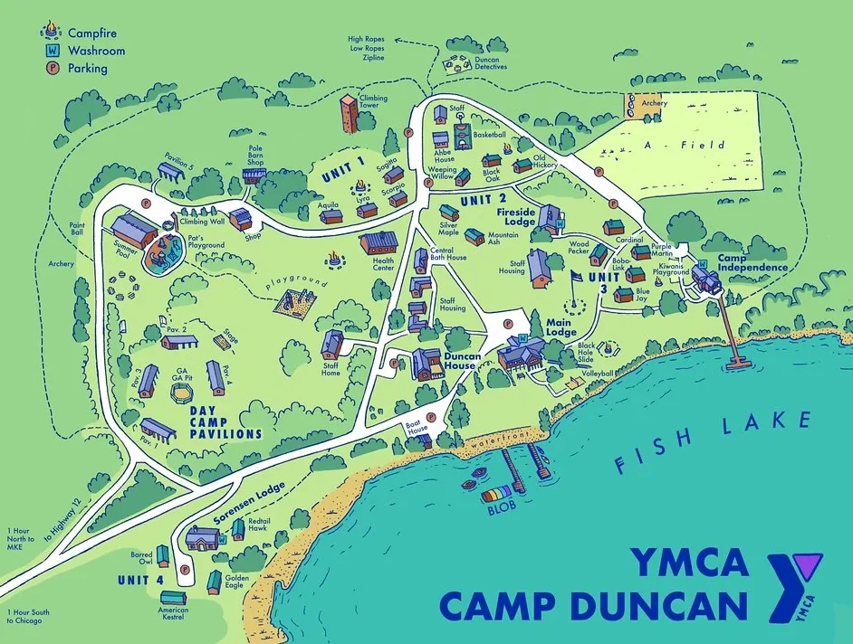
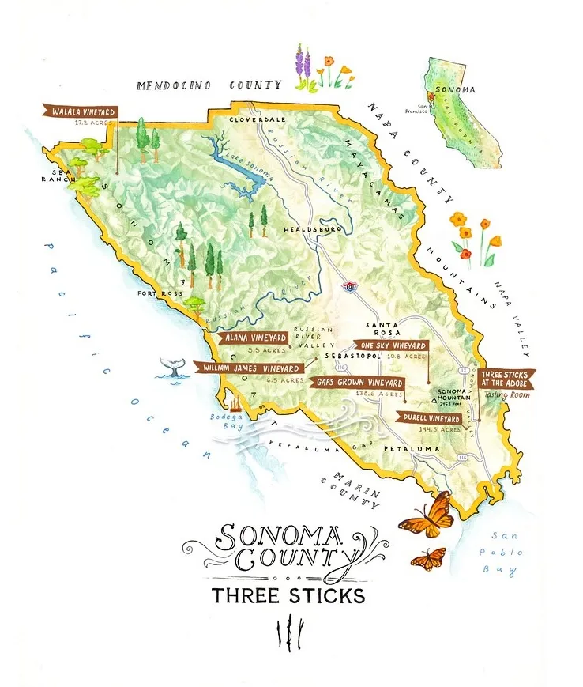
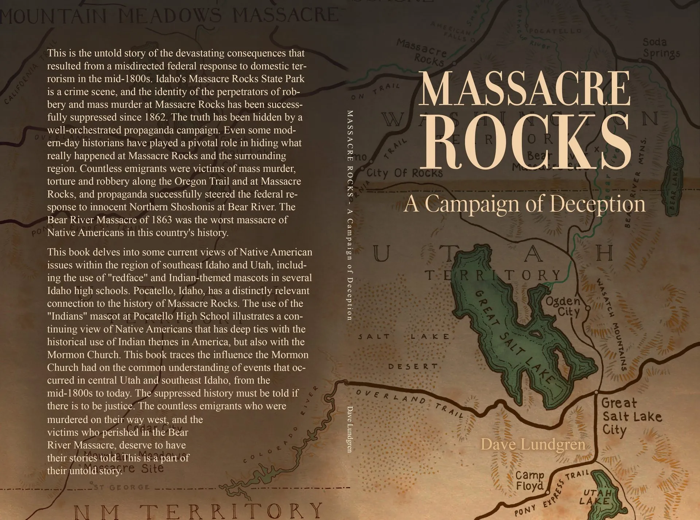
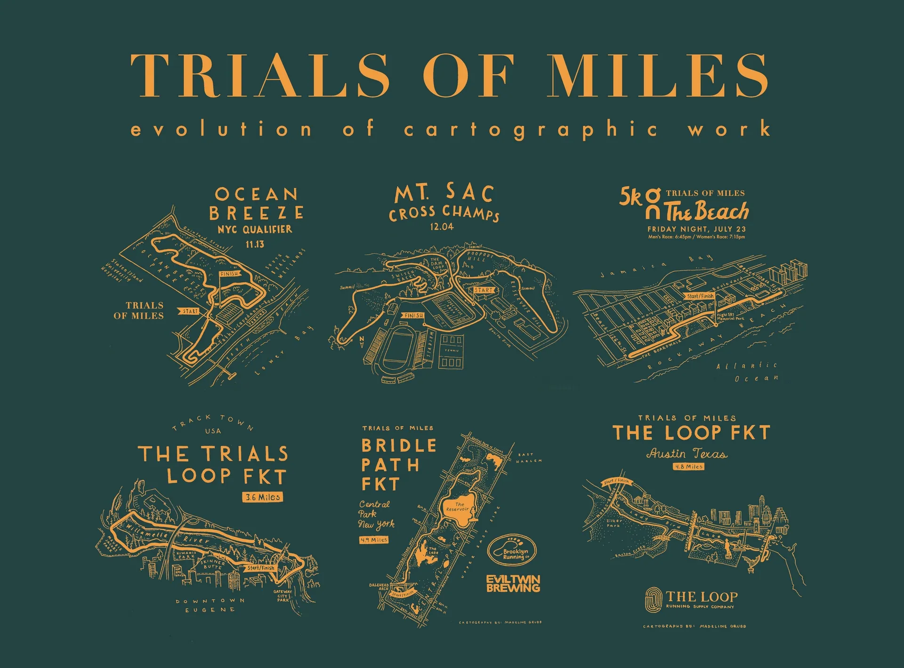

3D Maps & Terrain Models
High-resolution 3D maps and terrain models that bring landscapes to life through detailed elevation and shading.
Custom Cartography
We specialize in designing one-of-a-kind custom cartographic products that blend art, geography, and real world data.
Whether you are looking for a 3D model of a mountain range, a beautiful aerial painting of your ranch, or a commemorative map of your favorite summer backpacking trip we've got you covered.
Start Your Custom Map Today

High-resolution 3D maps and terrain models that bring landscapes to life through detailed elevation and shading.

Artistic, hand-painted maps that turn real landscapes and places into timeless and captivating keepsakes.

Data-driven visualizations that communicate spatial patterns with clarity and precision, revealing insights across landscapes.
Every map project is a little different, so I price each one individually based on its size, complexity, and how much time it will take to bring your vision to life. That said, here’s a general idea of what to expect for costs, keeping in mind that making maps is often a long labor of love:
Each project includes one round of revisions; additional edits are billed hourly.
After our free 15-minute consultation, I’ll prepare a detailed quote outlining the project scope, cost, and timeline. Once everything looks good, I’ll send over a simple agreement so we’re both on the same page before I begin work.
I typically invoice at the end of the project, once the map is complete and ready for delivery. For projects with long timelines or multiple phases, I may break payments into milestones or request a small deposit to hold your spot. Payments can be made easily by credit card, check, PayPal, or bank transfer, and all costs are agreed upon up front—so there are no surprises along the way.
Timelines can vary quite a bit depending on the size and complexity of the map. During our free 15-minute consultation, I’ll let you know when I can fit your project into my schedule and give a rough estimate for how long it should take from start to finish.
I’ll always keep you updated on progress and timelines throughout the process, so you’ll know exactly where things stand.
My schedule can fill up quickly, especially during summer and fall. It’s best to reach out at least a month or two in advance for small projects and even earlier for larger ones. During our consultation, I’ll let you know the next available slot of time I will be able to work on your project.
Right now I'm booking my schedule out into 2026 and cannot take any projects for the 2025 Christmas season.
If you’re working under a deadline, let me know! I occasionally take on rush projects depending on my schedule. Tight turnarounds may incur an additional fee, but I’ll always be upfront about what’s possible before we begin.
After our initial consultation, if I’m able to take on your project, I’ll send over a short project form to gather the details I need before getting started. This form will ask about things like:
Having this information up front helps make sure we’re both fully prepared and ensures I can start your map with a clear vision and strong foundation.
Absolutely! I love working closely with clients who are excited to be part of the creative process. You’ll have opportunities to share ideas, give feedback, and be involved every step of the way as the map takes shape.
That being said, not everything is possible to change once we've started the map and agreed upon a style, which is why it is important to have these conversations early. I will try to keep you in the loop if what is being asked for style is too much given the scope of the project or the business of the map. Often cartography is just as much about choosing what to leave out, as it is what to include.
Each project includes one round of revisions after the final draft is provided. However, I will always look for feedback on earlier sketches and styles and you will be able to give feedback and on these as they come up before any final draft is provided.
I share drafts in Notion, where you can easily leave comments and suggestions. If additional edits are needed beyond the included round, they’re billed hourly.
Most communication happens over email, with optional check-ins by Google Meet or phone: whichever is easiest for you. I keep things organized and transparent so you always know what stage the map is in and what’s coming next.
I handle all documents in Notion and will keep quotes, contract, project scope and drafts on a web-page I will share with you.
You’ll receive the final high-resolution digital files of your map, ready for print or web use.
For a hand-drawn project or an artistic map, I can also arrange to ship the original artwork or a fine-art print version upon request and at cost of printing / shipping.
If communicated up-front I can also send original GIS or Adobe files.
Unless we’ve discussed otherwise, all projects include personal and promotional use rights. If you’d like to use your map for commercial purposes (like selling prints or products), this needs to be discussed upfront before the project commences.
You’ll receive the finished map files and the right to use them as agreed upon, but I retain the copyright to the artwork. This allows me to share it in my portfolio or social media unless we agree to keep it private.
In addition, If I've created basemaps or terrain visualizations as part of a "background image" for a map, I may reuse this for future prints or cartographic work although the map will never be resold as it was created for you. If you're interested in obtaining a piece that will never be replicated in any way, mention this to me and I can build that into the pricing structure of the quote for the project.
Over the past ten years I have been taking cartographic commissions I have worked with over 100+ clients from all around the world on a WIDE variety of projects and map types:
FOR BUSINESSES
PRIVATE ART & WALL DECOR
SCIENCE & RESEARCH
OUTDOOR & ADVENTURE

"Maddy is GREAT! She's creative, thoughtful, responsive. She's fun to work with and we've now completed two complex projects together and they've been extremely well received."
Brett Posten

"Madeline did exactly what we were looking for. Her communication was stellar and the work was pristine. I will no doubt recommend her to my colleagues without hesitation."
Bobby Thomas, YMCA

"Maddy was GREAT to work with - her art is beautiful and her concern and attention for detail was above and beyond. She was incredibly patient with us as we went back and forth with many many edits and she was cheerful throughout. It was great working with her, and I hope to have the chance to work with her again!"
Audra Tavelli

"Maddy was exceptional. I needed detailed maps, and she produced deliverables that exceeded my expectations in a timely and professional manner. She communicated with me throughout the project, and produced some really high quality maps. I highly recommend her."
David Lundgren

"Maddy is very responsive, easy to work with, and does incredible work."
Cooper Knowlton, Trials of Miles